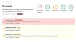
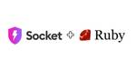

Socket
フィード

Supply Chain Attacks Targeting LLM Application Developers: The Hidden Dangers of Fake Open Source Packages
Socket
Socket is tracking a new trend where malicious actors are now exploiting the popularity of LLM research to spread malware through seemingly useful open source packages.
13時間前
Noxia: Emerging Dark Web Hosting Provider Targets Python, Node.js, Go, and Rust Ecosystems
Socket
Noxia, a new dark web bulletproof host, offers dirt cheap servers for Python, Node.js, Go, and Rust, enabling cybercriminals to distribute malware and execute supply chain attacks.
1日前
Socket secures $40M to combat next-generation software supply chain attacks led by industry titans Abstract Ventures, Elad Gil, and a16z
Socket
Socket safeguards companies from software supply chain attacks by detecting and preventing threats in open source code and empowering developers to secure their applications and critical services against malware and other security risks.
3日前

Introducing Ruby Support in Socket
Socket
Socket is launching Ruby support for all users. Enhance your Rails projects with AI-powered security scans for vulnerabilities and supply chain threats. Now in Beta!
4日前

Introducing License Enforcement in Socket
Socket
Ensure open-source compliance with Socket’s License Enforcement Beta. Set up your License Policy and secure your software!
8日前

Enhancing Open-Source Compliance: Introducing Socket’s Advanced License Analysis
Socket
We're launching a new set of license analysis and compliance features for analyzing, managing, and complying with licenses across a range of supported languages and ecosystems.
8日前
Introducing Socket Optimize
Socket
We're excited to introduce Socket Optimize, a powerful CLI command to secure open source dependencies with tested, optimized package overrides.
9日前

Introducing Java Support in Socket
Socket
We're excited to announce that Socket now supports the Java programming language.
10日前

Typosquatting on PyPI: Malicious Package Mimics Popular 'browser-cookie3' Library to Steal Sensitive Data
Socket
Socket detected a malicious Python package impersonating a popular browser cookie library to steal passwords, screenshots, webcam images, and Discord tokens.
13日前

Deno 2 Improves Compatibility with Node.js and npm, Expands Package Management Features
Socket
Deno 2.0 is now available with enhanced package management, full Node.js and npm compatibility, improved performance, and support for major JavaScript frameworks.
14日前